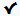

SharePoint Browser View
The SharePoint Browser view allows you to connect to a SharePoint repository and perform SharePoint-specific actions on the available resources. To display this view, go to .

The view is split in several functional areas:
Connection Area
The following controls are available:
- The Site combo box allows you to select and connect to an already defined SharePoint connection.
- The
 Disconnect
action terminates the current connection.
Disconnect
action terminates the current connection. - The
 Settings drop-down
menu contains actions that help you to quickly define a new connection or manage the
existing ones from the Data Source options page: New
SharePoint Connection and Configure Database
Sources. Also, here you can choose one of the predefined view
layouts.
Settings drop-down
menu contains actions that help you to quickly define a new connection or manage the
existing ones from the Data Source options page: New
SharePoint Connection and Configure Database
Sources. Also, here you can choose one of the predefined view
layouts.
Folder Content Area
The content of a folder is displayed in a tabular form, where each row represents the properties of a folder or document. The list of columns and the way the documents and folders are organized depends on the currently selected view of the parent library.
| Action | Description | Available for | |
|---|---|---|---|
| folders | documents | ||
 Open Open
|
Displays the content of the currently selected folder. Opens the current document for editing. |
 | |
| Rename | Renames the current node on server. | ||
| Import | Import files or folders into the currently selected folder. | ||
 Delete Delete |
Deletes the current node from the server. | ||
| Copy Location | Copies to clipboard the URL of the current node. | ||
 Check Out Check Out |
Reserves the current document for your use so that other users cannot change it while you are editing it. | ||
| Check In | Commits on the server the changes you made to the document, so that other users can see them. It also makes the document available for editing to other users. | ||
| Discard Check Out | Discards the previous checkout operation, making the file available for editing to other users. | ||
 Refresh Refresh |
Queries the server to refresh the available properties of the current node. | ||
| Drag and Drop | You can drag documents from the SharePoint Browser view and drop them in the main editor area to open them with ease. | ||
You can filter and sort the displayed items. To display the
available filters of a column, click the filter widget located on the column header. You can
apply multiple filters at the same time.
Note: A column can be filtered or sorted only if it
was configured this way on the server side.